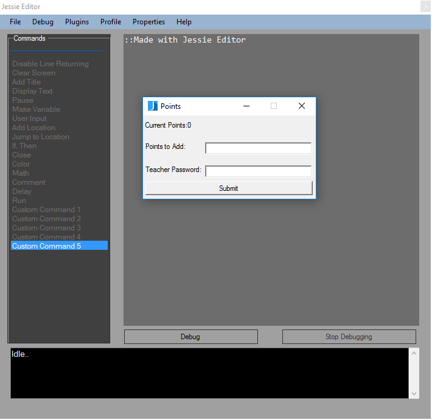
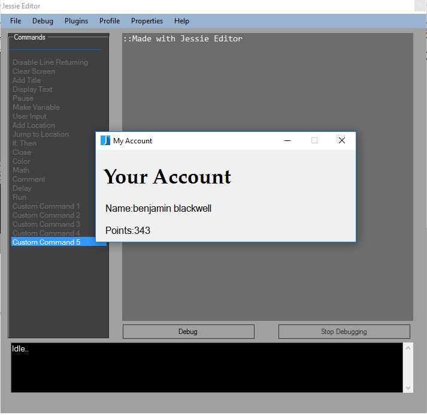

Adding Points
Points are given to students for properly doing assignments/programs in class. The teacher awards students how ever
many points they seem justified. This section wil show how to add and deduct points.
To add or remove points click on the Profile tab in Jessie Editor and select Add Points. A dialog will popup.

First type in the number of points to add. If you want to deduct points, enter a negative number.
Next type in the teacher set password, to verify that the teacher approves. Click submit to
add/subtract the points.
Teacher Tip-A good amount of points to give is 1 point per point scored on a test, quiz, or assignment.
Viewing Points
To view your points select the profile tab and click the view profile button.
From here you can see your name and your total points.
